Piulada de presentació - 11/9 Us presentem una iniciativa ciutadana per a la celebració d’un pícnic reivindicatiu. Com bé sabeu, els pícnics se celebren en grup, asseguts a terra amb una cistella amb prou menjar per a passar unes quantes hores. O dies. Seguirem informant. https://picnicxrepublica.org


 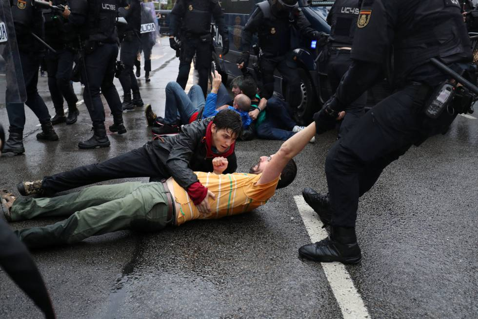
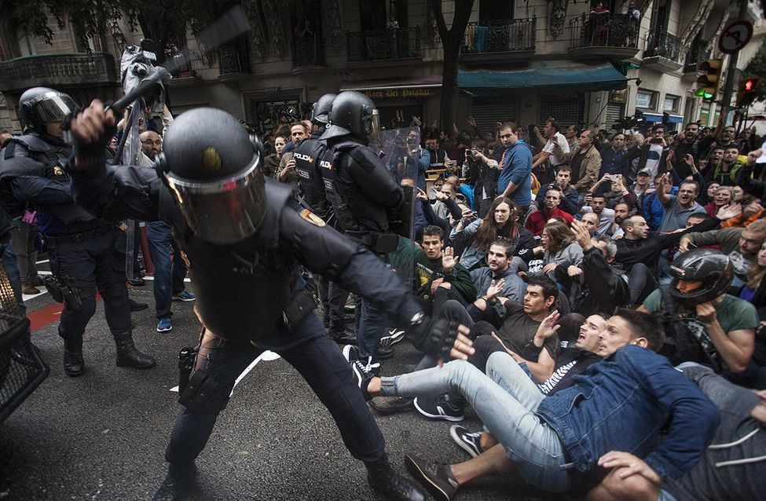
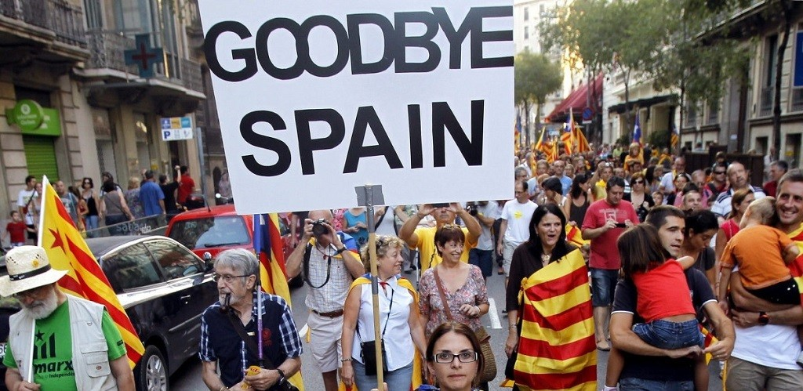
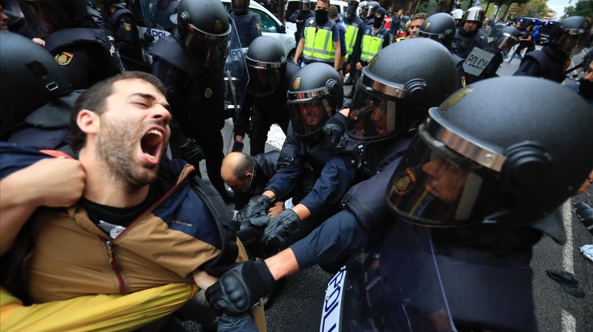
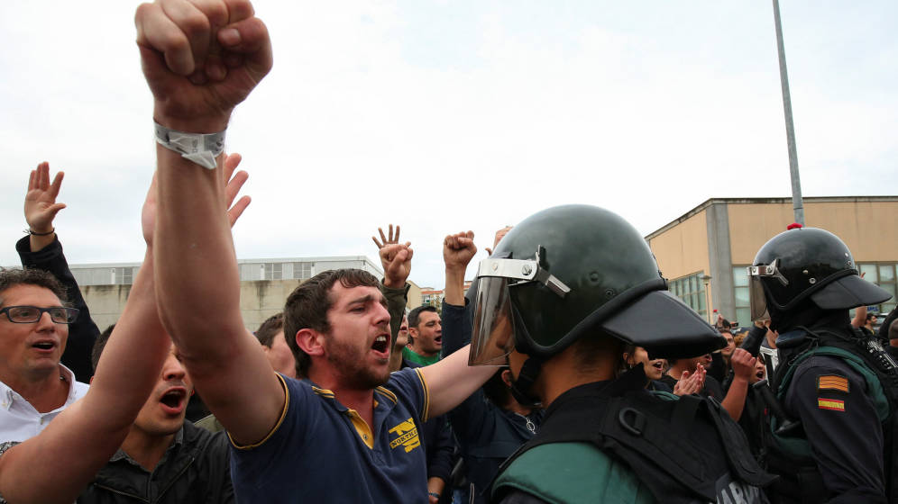
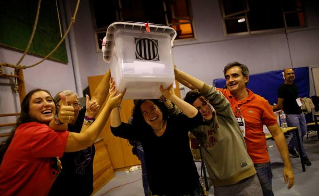
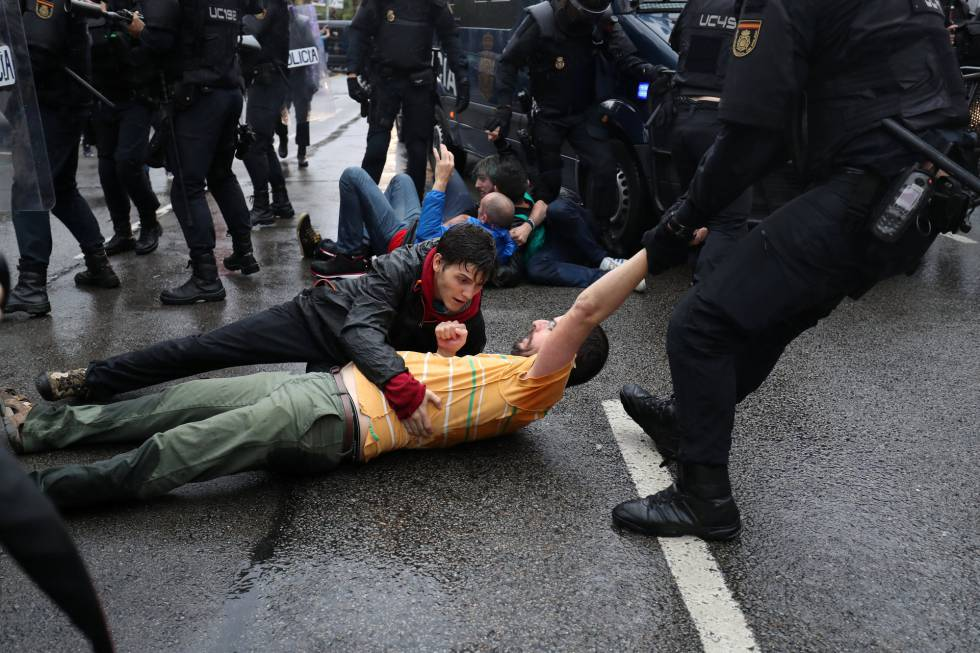
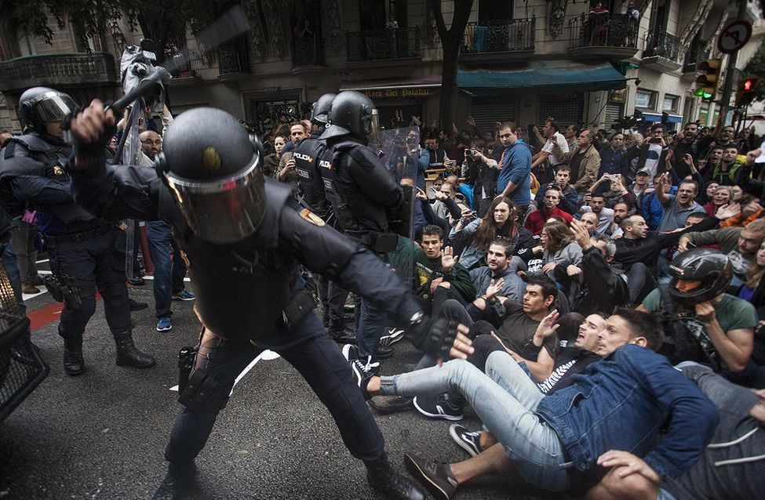
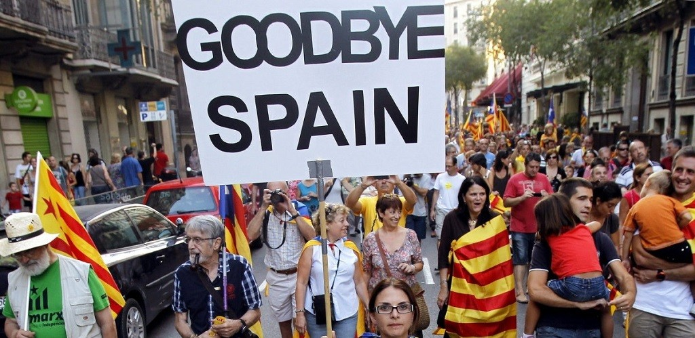
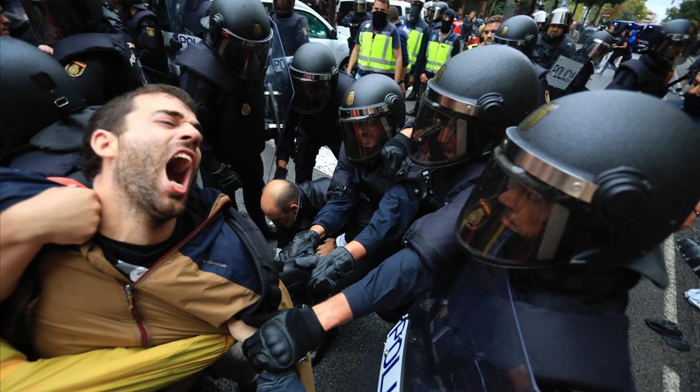
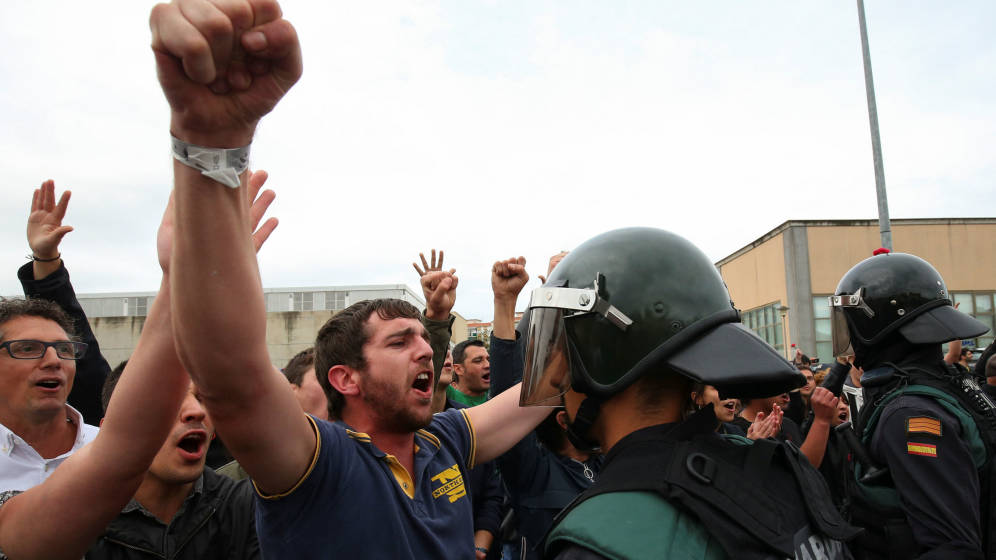
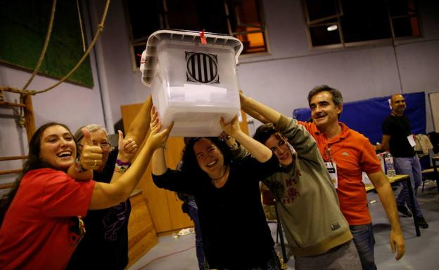